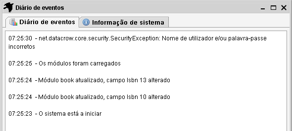
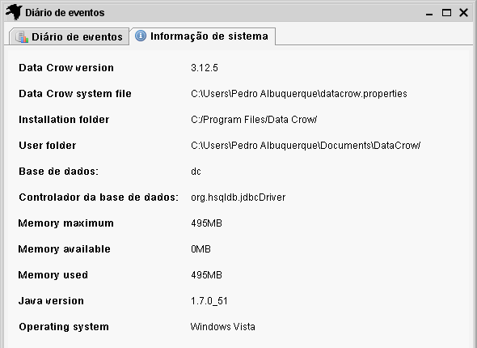

O diário
Caminho pelos menus: Ficheiro > Mostrar diário
O diário mostra mensagens geradas pelo Data Crow. Isto não habitualmente muito interessante de ver (a não ser que seja curioso).
É contudo um bom local para procurar em caso de comportamento inesperado. A informação encontrada aqui também
é escrita no ficheiro de diário. Este está localizado na pasta de utilizador que escolheu quando instalou o Data Crow.
Chama-se 'data_crow.log'.
Abaixo vê uma grande imagem do diário. Se está realmente interessado no que se passa dentro do Data Crow ou
se está a descobrir em erro por exemplo, pode iniciar o Data Crow com o parâmetro -debug para obter todas as mensagens.
Isto está explicado aqui.

Informação do sistema
O separador Informação do sistema dá-lhe indicação da memória e das pastas em uso.
